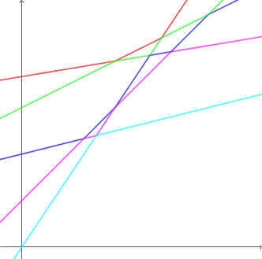

九条可怜是一个喜欢出题的女孩子，这道题是一道有关浙江省选的硬核模拟题。
在 $9102$ 年，有 $n$ 名选手参加了浙江省选，其中第 $i$ 个选手的智力是 $a_i$，训练量是 $b_i$。作为出题人，可怜可以自由选择这套题的风格是比较偏套路还是比较偏智力。
为了定量衡量一套题的风格，可怜定义了反向选拔指数 $x$，$x$ 是一个非负整数。第 $i$ 个选手在反向选拔指数为 $x$ 的题目上的表现为 $a_i x +b_i$。在 $x$ 给定的情况下，第 $i$ 个人的排名为表现严格大于 $a_i x + b_i$ 的人数再加一。
在 $9102$ 年浙江省队的人数为 $m$，因此只有排名小于等于 $m$ 的人才能够进入浙江省队。注意当有并列的情况时，进入浙江省队的人数可能多于 $m$。
不难发现，选手的排名和 $x$ 的关系非常大。现在，可怜想让你计算，第 $i$ 个选手有没有可能进入浙江省队，如果有可能，他最好的排名是多少。
第一行包含两个正整数 $n, m$ ($n \leq 10^5; m \leq \min \left\{ n, 20 \right\}$)，表示选手总数以及浙江省队的人数。
接下来 $n$ 行，每行两个正整数 $a_i, b_i$ ($a_i \leq 10^9; b_i \leq 10^{18}$)，表示每个选手的属性值，保证选手的属性值两两不同，即 $\forall 1 \leq i < j \leq n$，有 $a_i \neq a_j \vee b_i \neq b_j$。
输出一行，包含 $n$ 个整数，如果第 $i$ 个选手进不了浙江省队，就输出 $-1$，否则输出他可能的最好排名。
由题意，每个选手可以看成一条坐标平面上的直线 $y = f_i \left( x \right) = a_i x + b_i$，对于某个 "反向选拔指数" $x_0$，所有选手的排名就是直线 $x = x_0$ 与所有直线 $y = f_i \left( x \right)$ 的交点自上而下的顺序。
因此，如果允许 $x$ 为非负实数，则第 $i$ 名就是这些直线的并的 "折线拆分" 中自上而下数第 $i$ 段折线，如下图：
对于 $x$ 是整数的限制，无非就是要求使这一簇直线 $x = x_0$ 只能从整数取值，从而加强限制。
$m = 1$ 的情况可以说是最简单的。根据上图以及简单的数学推导，可以发现能取到第一名的折线其实就是这些直线的上方所构成的 "下凸包"，形式化地，即半平面簇 $y \geq f_i \left( x \right)$ 的交。
于是简单地用一个栈维护半平面即可，对于 $x$ 是整数的情况，只需要在比较交点坐标的时候 (将原先的交点坐标) 上取整即可得到 "离散的" 半平面交。
这样做半平面交的时间复杂度就是对直线排序的复杂度，$O \left( n \log n \right)$。
接下来考虑 $m > 1$ 的情况，由于 $m \leq 20$，因此可以猜想复杂度因子中有 $m \cdot n$ —— 也就是说，"做 $m$ 次类似上面的操作"。
先观察 $m = 2$ 的情况，也就是上图中的绿色部分。容易发现，它的有些部分可能会和 "取到第一名的折线" 共享一条直线。然而我们所需要的，就是去除掉共享的部分后，所得的剩下的部分。
于是我们可以将已经取到第一名的所有直线 (即上图中的红色部分所在的直线) 均将其删去，对剩下的部分做一遍 "下凸包" (半平面交，记为 $H$)。容易发现，$H$ 一定会落于绿色直线下方 (或重合)。
因此，我们只需对折线 $H$ 上的线段逐一做检验即可。对于固定的 $x_0 \in \mathbb N$，直线 $x = x_0$ 一定会与 $H$ 交于唯一确定的点 $\left( x_0, y_0 \right)$。而此时，由定义，经过这个点 $\left( x_0, y_0 \right)$ 的直线要到第 $2$ 名的充要条件就是 "已经被删去的直线" 中，满足 $f_i \left( x_0 \right) > y_0$ 的直线至多 $1$ 条。
于是，我们对于每条 "已经被删去的直线" $y = f_i \left( x \right)$，统计出它 "覆盖" 了 $H$ 上的哪一段，即找出一个区间 $\left( L, R \right)$，使得 $f_i \left( x \right) > y_0 \Leftrightarrow x \in \left( L, R \right)$。
这个区间可以通过二分直线 $y = f_i \left( x \right)$ 与下凸包 $H$ 的交点来找到。要注意的是，由于 "反向选拔指数" 必须为整数，因此我们需要取包含于交点区间中的最大的整数区间。
对每条线段统计完对应的区间后，最后的问题就简单了——就是一个单纯的线段覆盖问题，将端点排序后直接统计即可。
对 $m > 2$ 的情况，上面的方法是完全使用的，只需注意到粉色部分中到第 $k$ 名的充要条件是，"已经被删去的直线" 中，满足 $f_i \left( x_0 \right) > y_0$ 的直线至多 $k - 1$ 条。
总时间复杂度 $O \left( m \cdot n \log n \right)$。
#include <bits/stdc++.h>
typedef long double ld;
typedef long long ll;
typedef std::pair <ll, int> pr;
const int N = 100054;
const ld eps = 2e-11;
struct line {
int k; ll b;
line * read() {return scanf("%d%lld", &k, &b), this;}
inline bool operator < (const line &B) const {return k < B.k || (k == B.k && b > B.b);}
} l[N];
int n, K;
int o[N], ans[N];
int tot = 0, top = 0, stack[N];
ld is[N];
pr rg[N * 2];
ld inter(const line &a, const line &b) {return (ld)(a.b - b.b) / (b.k - a.k);}
int insert(int id) {
if (top && l[stack[top]].k >= l[id].k) return 0;
for (; top && inter(l[stack[top]], l[id]) + eps < ceill(is[top]); --top);
return top && (is[top + 1] = inter(l[stack[top]], l[id])), stack[++top] = id;
}
inline bool checkL(const line &ch, const line &b, ld Int) {return ch.k <= b.k || inter(ch, b) < Int;}
inline bool checkR(const line &ch, const line &b, ld Int) {return ch.k >= b.k || inter(ch, b) > Int;}
int main() {
int i, j, k, J, *p, cur, L, R, M; ld ix;
scanf("%d%d", &n, &K);
for (i = 0; i < n; ++i) l[i].read(), o[i] = i;
memset(ans, -1, n << 2);
std::sort(o, o + n, [] (const int x, const int y) {return l[x] < l[y];});
for (k = 0; k < K; ++k) {
tot = top = cur = 0;
for (p = o; p != o + n; ++p) ~ans[*p] || insert(*p);
is[top + 1] = LLONG_MAX;
for (i = 0; i < n; ++i) if (~ans[i]) {
for (L = 1, R = top; L < R; checkL(l[i], l[stack[M]], is[M + 1]) ? R = M : (L = M + 1)) M = (L + R) / 2;
if (l[i].k > l[stack[L]].k && (ix = inter(l[i], l[stack[L]])) >= 0)
rg[tot++] = pr(floorl(ix) + 1, 1);
else ++cur;
for (L = 1, R = top; L < R; checkR(l[i], l[stack[M]], is[M]) ? L = M : (R = M - 1)) M = (L + R + 1) / 2;
if (l[i].k < l[stack[L]].k && (ix = inter(l[i], l[stack[L]])) < LLONG_MAX)
rg[tot++] = pr(ceill(ix), -1);
}
std::sort(rg, rg + tot);
for (j = 0, i = 1; i <= top; ++i) {
for (; j < tot && rg[j].first <= ceill(is[i]); ++j) cur += rg[j].second;
if (cur <= k) ans[stack[i]] = k + 1;
for (J = j; j < tot && rg[j].first <= floorl(is[i + 1]); j = J) {
for (; J < tot && rg[j].first == rg[J].first; ++J) cur += rg[J].second;
if (cur <= k) ans[stack[i]] = k + 1;
}
}
}
for (i = 0; i < n; ++i) printf("%d%c", ans[i], i == n - 1 ? 10 : 32);
return 0;
}
坑1：二分直线与下凸包 $H$ 交点的时候，注意边界，以及斜率差的正负变化，避免除以 $0$。
坑2：再对坐标取整的时候，要注意使用下取整还是上取整。